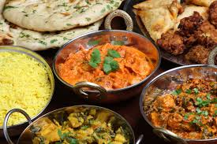

Welcome
This website is about simple and budget-friendly Indian recipes for students. Many students need food that is easy to cook, affordable, and tasty.
In this website, you can see meals, sweets, drinks, cooking tips, and a recipe table. You can also use the form page to add recipe details for the table.

What You Can Find Here
The meals page shows filling dishes. The sweets page shows desserts. The drinks page shows refreshing drinks. The table page gives recipe details clearly. The form page lets visitors enter recipe information.
In Indian cooking, tempering, also called tadka, is an important step that adds flavor and aroma to dishes like dal.
Featured Recipe Video
This is one of the best dishes from India. It is very popular and loved for its rich taste and simple cooking method. You can watch the full recipe here: Watch on YouTube